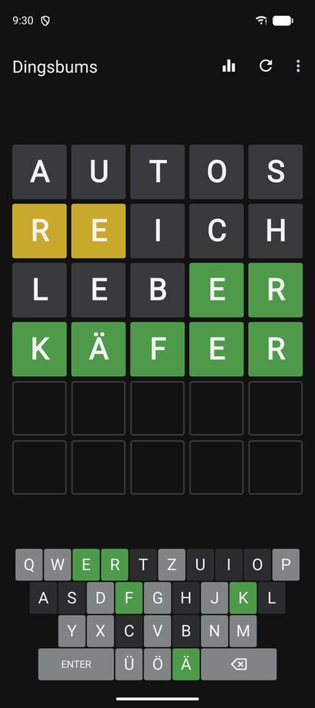
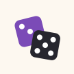
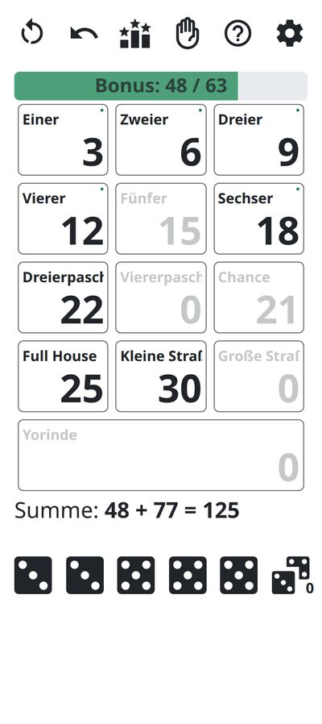
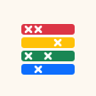
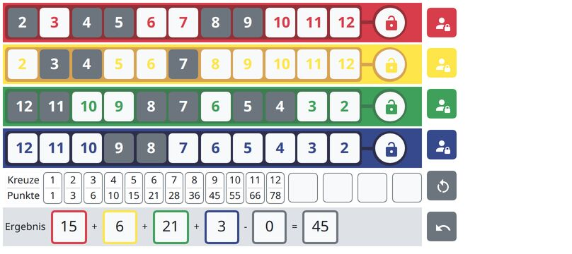

Spiele
Ein Rätsel zum Allein-Spielen und zwei Spielblöcke für den Spieleabend, entstanden für den Hausgebrauch. Kostenlos, ohne Werbung und ohne Konto – gespeichert wird nur auf dem eigenen Gerät.
Dingsbums
Wörter raten · für Android
Ein deutsches Wort mit fünf Buchstaben in sechs Versuchen erraten – grün, gelb und grau zeigen, wie nah man dran ist.
- Bildschirmtastatur mit Umlauten
- Statistik mit Serien und Versuchen
- Kindgerechte Wörter, läuft auch auf dem Fire-HD-Kids-Tablet


Yorinde
Würfelspiel-Block · im Browser
Der Block für das Würfelspiel mit fünf Würfeln – mit echten Würfeln am Tisch oder ganz auf dem Handy gewürfelt.
- Würfelt auf Wunsch selbst, bis zu dreimal pro Runde
- Zeigt, was der Wurf in jedem Feld bringen würde
- Bestenliste mit Statistik über alle Spiele


Qwixx
Spielblock · im Browser
Ankreuzen auf dem Handy statt auf Papier: Gewürfelt wird weiter am Tisch, die Punkte rechnet die Seite selbst zusammen.
- Achtet darauf, dass nur rechts vom letzten Kreuz angekreuzt wird
- Schlösser, Fehlwürfe und Rückgängig
- Am besten im Querformat
